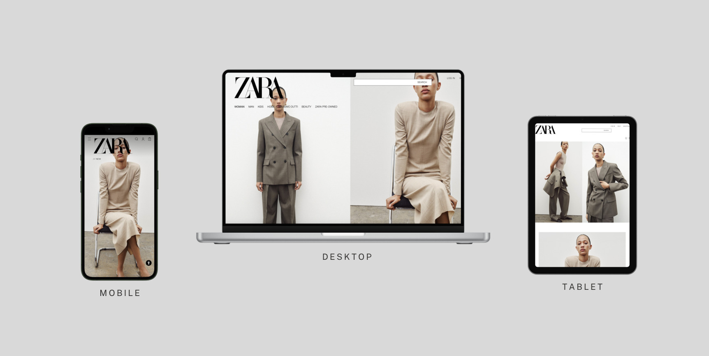
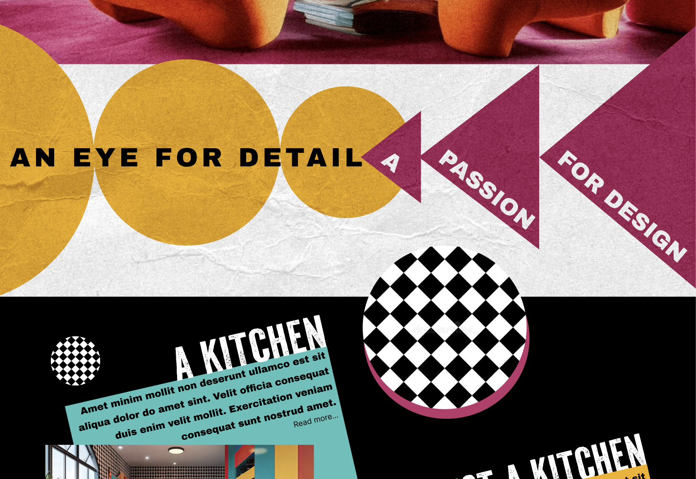
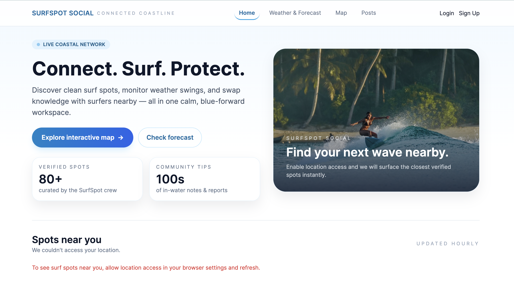

✨ UX Design
Wireframes, user flows, user research, usability testing.
Computer Science + UXID Student
I design and build thoughtful, user-first digital experiences by blending technology, creativity, and human-centered thinking.
Currently exploring
I enjoy creating digital experiences that feel simple, intuitive, and human. From designing interfaces to building front-end interactions, I love combining creative thinking with problem-solving to make things that actually help people.
Wireframes, user flows, user research, usability testing.
Python, Java, HTML, CSS, JavaScript, front-end thinking, component design & OOP.
Brand aesthetics, color palettes, personal projects, design explorations and all-rounded learning.
Here's a snapshot of what I'm passionate about and what drives my work.

A study on how Zara.com could evolve visually and structurally without breaking the core brand.
Check It Out!
A bold visual study transforming a minimal template into a vibrant Constructivist + Memphis hybrid.
See Transformation
A community-focused surf platform designed to help surfers explore safely, connect locally, and share knowledge.
Check out the WebsiteA curated collection of tender, humorous, and myth-inspired poems exploring memory, identity, and belonging.
Read the CollectionInterested in learning more? Here are a few ways to explore my work.